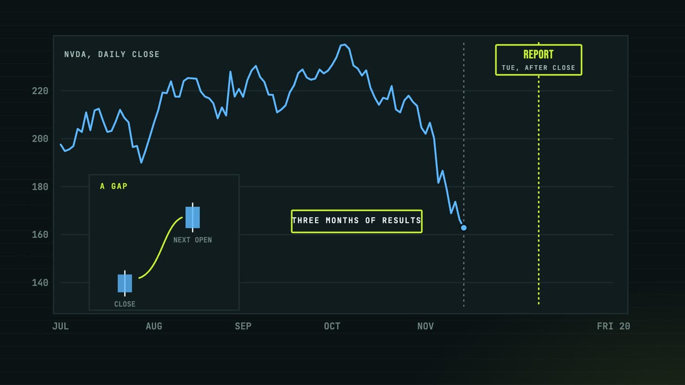
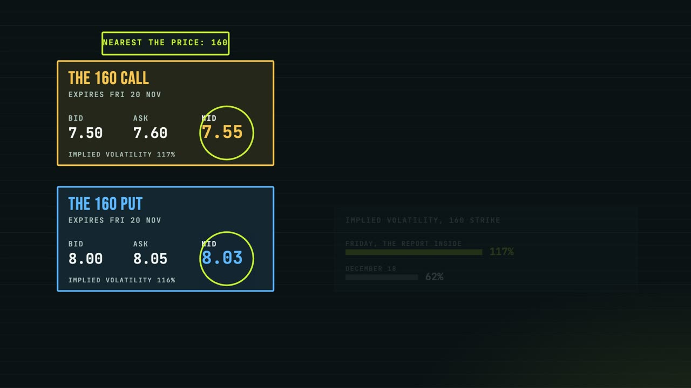
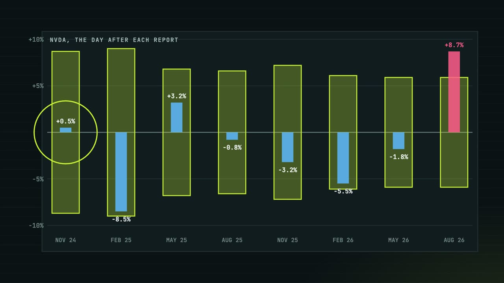
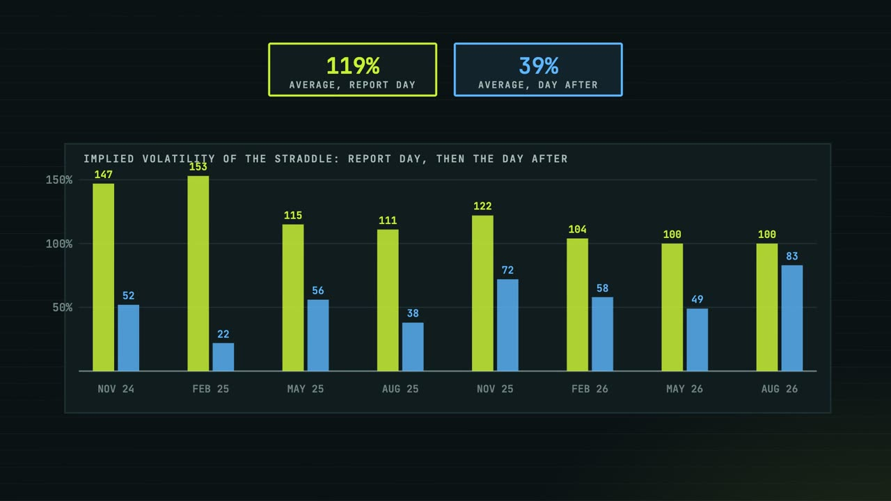
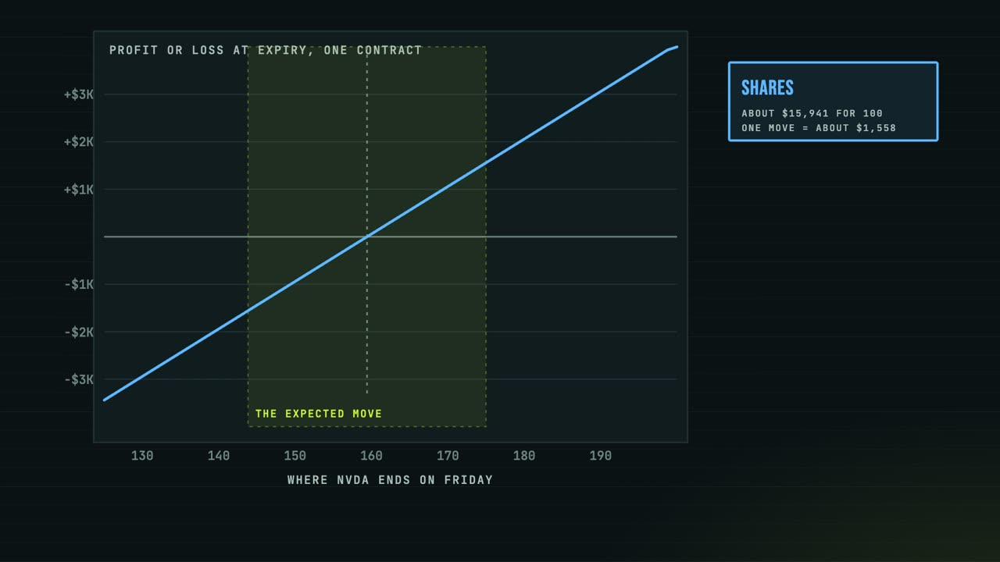
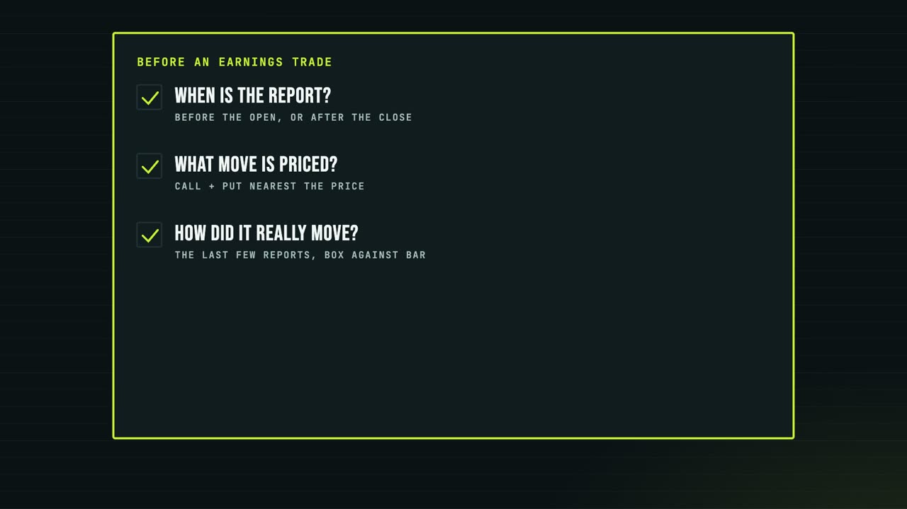

Lessons / Options, earnings and volatility
How to Calculate a Stock's Expected Move Before Earnings (NVIDIA Example)
NVIDIA (NVDA) reports its Q3 fiscal 2027 earnings on Tuesday 17 November 2026, after the close - its first report since its chief executive stepped down. This week the options price a move of about 9.8% either way. This video teaches how to read that number before you trade: add the call and the put nearest the price to get the expected move; check how the stock really moved against what options priced on its last eight reports; why the volatility crush makes an option lose even when the direction is right; and what owning shares, buying a straddle, selling an iron condor or waiting each need to work. Animation only, real data from Alpaca. For education only, not financial advice.
Prices are as of 9:34 am New York time on Monday 16 November 2026, with NVDA at 159.41.
What an earnings move is Watch from 0:49

An earnings report is a company's results for the last three months. Like most big companies, NVIDIA releases them after the market closes.
So most of the reaction comes the next morning. The stock often opens far from where it closed. Traders call that jump a gap.
Last August it opened 6.3% higher the morning after. The price jumped before most people could act.
Options are how traders bet on that jump, or protect against it. A call gains when the stock rises. A put gains when it falls.
The more uncertain the next few days, the more both of them cost. That extra price is measured as implied volatility: the yearly swing the price implies.
This week, with the report inside it, it is about 117%. For December, about 62.
Read the expected move Watch from 1:38

First, find the strike nearest the price. The stock traded near 159.41, so that is the 160 strike, expiring Friday.
The call costs about $7.55. The put, about $8.03. Each is the middle of the bid and the ask.
Together they cost $15.58. Buying both is called a straddle. Its price is roughly how far the market expects the stock to move by Friday.
On a stock near 159.41, that is 9.8%, either way.
So the market expects Friday's price somewhere between about 143.83 and 174.99. That is the expected move.
Check: add the call and the put at the strike nearest the price. That sum is the move the market expects.
Check how it really moved Watch from 2:29

Now look back. Each box is the move the options priced on a past report day, worked out the same way, from the straddle.
Each bar is how far the stock really moved by the next day's close. In November 2024, the options priced 8.7%. The stock moved 0.5%.
On average, the options priced 7%. The stock really moved 4%.
Seven times it stayed inside its box. Once it did not.
Last August the options priced 5.9%. The stock rose 8.7%.
Eight reports is a small sample, and every quarter is different. But it shows you whether this stock tends to move more or less than its price.
Check: line up the past expected moves against the real ones. Does this stock usually beat its price, or fall short?
Expect the crush Watch from 3:21

Next, look at the options themselves. The bright bars are the straddle's implied volatility on each report day.
The blue bars are the next day. On average it fell from about 119% to about 54.
The unknown is gone, so the extra price goes with it. Traders call this the volatility crush.
In May last year, the stock rose 3.2% the day after its report.
A call bought before the report cost $4.55. The next day it was worth $4.52. The direction was right, and it made nothing.
In February 2025, the stock fell 8.5%. A big move, and the straddle still lost. It cost $11.84, and was worth $10.85 the next day.
Check: an option bought before the report has to beat the expected move, not just guess the direction.
Know what your trade needs Watch from 4:17

There are four common ways into a report. Here is what each one needs, priced at this morning's numbers, held to Friday's expiry.
One: own the shares. 100 shares cost about $15,941. One expected move is worth about $1,558, up or down.
It needs nothing special to happen. But a gap can open straight past a stop order, so a stop does not cap the loss overnight.
Two: buy the straddle, for about $1,558.
It only makes money if Friday's price ends below 144.42, or above 175.58. It needs a bigger move than the market expects.
On the last eight reports, the straddle was worth more the next day only once.
Three: sell an iron condor, placed just outside the expected move. Here, that is the 140 put and the 175 call. Each has a cheaper option $5 further out, to cap the loss.
It collects about $144, and can lose at most about $356.
It needs a smaller move than expected. It wins small, and when it is wrong it loses more than it could win.
Four: wait. Let the report come out, and trade afterwards, when option prices have come down.
It needs patience. You give up the first move, and you also skip the gap.
Check: before any trade, say what has to happen for it to work, and the most it can lose if it does not.
Your checklist Watch from 5:48

Here is the whole lesson, on one card.
When is the report: before the open, or after the close?
What move is priced? Add the call and the put nearest the price.
How did it really move, the last few times?
Then ask: does the crush hurt your option, the morning after?
And what is the most you can lose, if the gap goes the wrong way?
These prices were taken at 9:34 on Monday morning, New York time. They change all the time, so check them yourself before the report on Tuesday.
This video is for education only, and not financial advice. The numbers are facts. What you do with them is your decision.